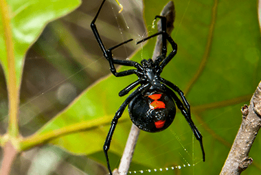

🌐 Global Exploration
Spider Regions
From the Amazon jungle floor to Australian suburbs — discover the spiders that rule every corner of the Earth.
About This Region
Asia is the world's largest continent, spanning environments from the freezing Himalayas to the humid tropical rainforests of Southeast Asia — covering Thailand, Cambodia, Vietnam, Indonesia, and Malaysia. The warm, dense jungles of Southeast Asia are among the richest biodiversity hotspots on Earth, supporting spiders adapted to every layer of the forest: from ancient trapdoor species unchanged for 300 million years to vivid orb-weavers stringing golden webs between bamboo stalks.
Tropical, monsoon, temperate, alpine
Tropical rainforest, rice paddies, bamboo forests, mountain caves
10,000+ documented across Asia
Liphistiidae spiders found only in SE Asia are living fossils — their segmented abdomens are unchanged from 300 million years ago

Most Recognised
Joro Spider
Trichonephila clavata
Native to East Asia, the Joro Spider has become a media sensation since it established itself as an invasive species across the southeastern US. Females grow up to 8 cm leg span and build enormous golden webs. Despite their striking appearance, they pose virtually no danger to humans.
Gallery
Joro Spider
Trichonephila clavata

Chinese Bird Spider
Haplopelma schmidti

Ornamental Tarantula
Poecilotheria ornata
Spider Frequency in Asia
| Spider | Scientific Name | Frequency | Primary Habitat | Danger |
|---|---|---|---|---|
| Chinese Bird Spider | Haplopelma schmidti | Moderate | Tropical forest floors — Vietnam, Laos, Cambodia | HIGH |
| Joro Spider | Trichonephila clavata | Common | Forests, gardens, roadsides — Japan, China, Korea | NONE |
| Jumping Spiders | Family Salticidae | Very Common | Nationwide across all habitats | NONE |
| Ornamental Tarantula | Poecilotheria ornata | Moderate | India, Sri Lanka — rainforest canopy trees | MODERATE |
| Signature Spider | Argiope aemula | Very Common | Tropical Asia, gardens, rice fields | NONE |
| Liphistius (Trapdoor) | Liphistius spp. | Rare | Forest soils and caves — SE Asia only | NONE |
About This Region
Europe spans from the cold tundra of Scandinavia to the sun-baked Mediterranean coast. With over 5,775 documented species, it hosts a wide variety of arachnids — the vast majority completely harmless. A small number in southern Europe carry medically significant venom, particularly around the Mediterranean basin. Europe is also home to one of the world's most unique spiders: the Water Spider, the only species on Earth that lives entirely underwater in a self-constructed silk diving bell.
Oceanic, continental, Mediterranean, boreal/tundra
Temperate forests, meadows, gardens, caves, rocky coastline
5,775+ documented (Araneae Database, 2026)
The Water Spider (Argyroneta aquatica) is the only spider in the world that lives entirely underwater, breathing from a silk diving bell

Most Recognised
European Garden Spider
Araneus diadematus
The most iconic spider of Europe, recognisable by the white cross-shaped pattern of dots on its plump abdomen. It rebuilds its orb web completely every single day, often consuming the old silk to recycle its proteins. Its white markings are caused by deposits of the chemical guanine — not paint.
Gallery
European Garden Spider
Araneus diadematus

Water Spider
Argyroneta aquatica

Mediterranean Black Widow
Latrodectus tredecimguttatus
Spider Frequency in Europe
| Spider | Scientific Name | Frequency | Primary Habitat | Danger |
|---|---|---|---|---|
| European Garden Spider | Araneus diadematus | Very Common | Gardens, parks, hedgerows, forest edges | NONE |
| Cellar Spider | Pholcus phalangioides | Ubiquitous | Indoors — basements, corners, ceilings | NONE |
| Wolf Spider (Tarantula) | Lycosa tarantula | Common | Mediterranean dry scrubland, grassland | LOW |
| Mediterranean Black Widow | Latrodectus tredecimguttatus | Moderate | Southern Europe, wheat fields, vineyards | HIGH |
| Mediterranean Recluse | Loxosceles rufescens | Moderate | Mediterranean region, caves, buildings | HIGH |
| Water Spider | Argyroneta aquatica | Rare | Freshwater ponds, slow streams, bogs | LOW |
About This Region
The Americas span two continents with radically different environments — North America's varied climates from arctic tundra to subtropical Florida, and South America's vast Amazon Rainforest, the Andes mountain range, and the bone-dry Atacama Desert. Together they are home to some of the world's most celebrated and feared spiders, including the largest spider on Earth by mass and the species widely considered to have the most dangerous venom of any spider alive.
Arid desert, temperate forest, tropical rainforest, subtropical grassland
Amazon basin, North American deserts, prairie grasslands, humid coastal forests
~3,700 in North America; 5,000+ in South America
Home to both the world's largest spider (Goliath Birdeater) and the world's most venomous (Brazilian Wandering Spider)

Most Recognised
Black Widow
Latrodectus mactans
Perhaps the most famous spider in the world, the Black Widow is instantly recognisable by its shiny black body and the red hourglass marking on the underside of its abdomen. Its neurotoxic venom is 15 times more potent than a rattlesnake's ounce for ounce — yet fatalities are extremely rare thanks to widely available antivenom and the spider's non-aggressive nature.
Gallery

Goliath Birdeater
Theraphosa blondi

Brazilian Wandering Spider
Phoneutria spp.
Spider Frequency in the Americas
| Spider | Scientific Name | Frequency | Primary Habitat | Danger |
|---|---|---|---|---|
| Black Widow | Latrodectus mactans | Very Common | South/West USA, grasslands, urban structures | HIGH |
| Brown Recluse | Loxosceles reclusa | Common | South-Central USA, indoors, storage areas | HIGH |
| Wolf Spider | Family Lycosidae | Very Common | Forests, gardens, ground litter — nationwide | LOW |
| American Tarantula | Aphonopelma spp. | Common | Southwest desert and arid scrubland | LOW |
| Jumping Spider | Family Salticidae | Very Common | Outdoor surfaces, windows, tree bark | NONE |
| Brazilian Wandering Spider | Phoneutria spp. | Common | Amazon floor, banana plantations | EXTREME |
| Goliath Birdeater | Theraphosa blondi | Common | Amazon rainforest — Venezuela, Brazil, Guyana | MODERATE |
About This Region
Africa is an exceptionally diverse continent — from the Sahara Desert (the world's largest hot desert) in the north, to the lush Congo Rainforest in central Africa, vast savannas in eastern and southern regions, and the ancient Namib and Kalahari deserts in the south. This variety creates a wide range of ecological niches for spiders — from desert ambush hunters that bury themselves in sand for months, to massive savanna tarantulas and brilliant golden orb-weavers spanning webs over a metre wide.
Desert, savanna, equatorial rainforest, Mediterranean coast
Sandy deserts, grassland savanna, tropical rainforest, rocky outcrops
3,000+ documented; many more unnamed in tropical regions
The Six-Eyed Sand Spider has one of the most potent venoms on Earth — and no antivenom has ever been developed for it

Most Recognised
Golden Silk Orb-Weaver
Nephila spp.
One of the most visually spectacular spiders in the world, the Golden Silk Orb-Weaver spins webs over a metre wide using literal golden-coloured silk — one of the strongest natural materials ever studied. Female bodies can reach 4 cm, while males are tiny. Their silk is so strong that a Madagascan cape woven from it took 4 years and over 1 million spiders to produce.
Gallery

Baboon Spider
Harpactira spp.

Golden Silk Orb-Weaver
Nephila spp.
Spider Frequency in Africa
| Spider | Scientific Name | Frequency | Primary Habitat | Danger |
|---|---|---|---|---|
| Six-Eyed Sand Spider | Sicarius hahni | Moderate | Namib and Kalahari deserts | EXTREME |
| African Button Spider | Latrodectus indistinctus | Common | Sub-Saharan Africa, under rocks, urban areas | HIGH |
| Baboon Spider | Harpactira spp. | Common | Savannas, grasslands, east/southern Africa | MODERATE |
| Golden Silk Orb-Weaver | Nephila spp. | Common | Tropical forests, sub-Saharan woodland | NONE |
| Rain Spider (Huntsman) | Palystes spp. | Very Common | Sub-Saharan Africa, forests, homes | LOW |
About This Region
Australia is arguably the most famous country in the world for dangerous wildlife — and its spiders are no exception. With over 10,000 known spider species, many still undescribed, it hosts the world's officially most dangerous spider and one of the most culturally iconic. Habitats range from tropical Queensland rainforests to the vast arid red centre, and the dense suburban gardens of Sydney where funnel-web spiders wander out after heavy rain — sometimes ending up in backyard swimming pools, where they can survive submerged for over 24 hours.
Tropical rainforest, arid desert, temperate coastal, alpine
Eucalyptus forest, desert scrub, tropical rainforest, urban gardens
10,000+ known — a global hotspot for arachnid diversity
Sydney Funnel-Web Spider is officially recognised by Guinness World Records as the world's most dangerous spider

Most Dangerous
Sydney Funnel-Web Spider
Atrax robustus
Officially the world's most dangerous spider per Guinness World Records. Shiny black, aggressive, and capable of killing a human in under 15 minutes if untreated. Its venom contains over 40 toxic proteins that rapidly overload the nervous system. Yet thanks to an antivenom introduced in 1981, there have been zero recorded deaths from its bite since.
Gallery
Sydney Funnel-Web
Atrax robustus

Redback Spider
Latrodectus hasselti

Peacock Spider
Maratus spp.
Spider Frequency in Australia
| Spider | Scientific Name | Frequency | Primary Habitat | Danger |
|---|---|---|---|---|
| Sydney Funnel-Web | Atrax robustus | Common (Sydney) | Moist gardens, under logs, rock crevices | EXTREME |
| Redback Spider | Latrodectus hasselti | Very Common | Urban areas, under rocks, outdoor furniture | HIGH |
| Huntsman Spider | Family Sparassidae | Very Common | Under bark, inside homes and cars | LOW |
| White-Tailed Spider | Lampona cylindrata | Common | Eastern and southern Australia, inside homes | MODERATE |
| Peacock Spider | Maratus spp. | Moderate | Eastern and southwestern Australia, heathland | NONE |
| Golden Orb-Weaver | Nephila plumipes | Common | Coastal and inland forests, gardens | NONE |